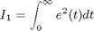
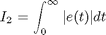
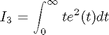
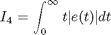
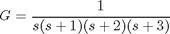
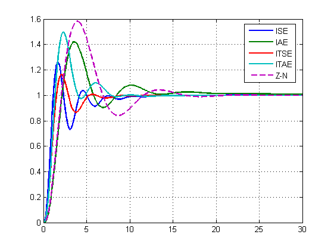
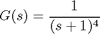
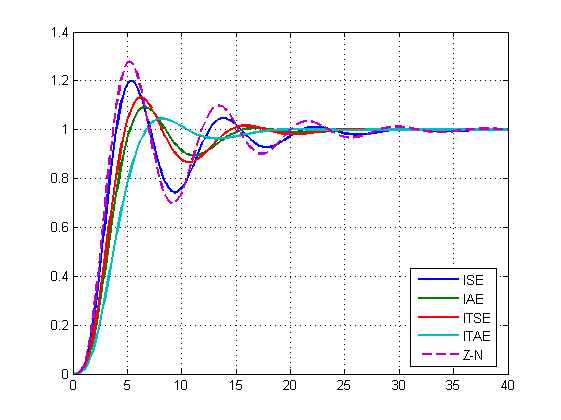

Learning PID Tuning III: Performance Index Optimization
Most PID tuning rules are based on first-order plus time delay assumption of the plant hence cannot ensure the best control performance. Using mordern optimization techniques, it is possible to tune a PID controller based on the actual transfer function of the plant to optimize the closed-loop performance.
Contents
Performance Indices
The performance indices used here are: 1. The Integral of Squared Error (ISE)

2. The Integral of Absolute Error (IAE)

3. The Integral of Time Multiply Squared Error (ITSE)

4. The Integral of Time multiply Absolute Error (ITAE)

Initial Controller Parameters
Like mose optimization problems, the control performance optimization is non-convext, hence a trap of local minimum is inevitable. To counteract this, the initial controller parameters is set to be those determined by one of existing tuning rules. In this way, the controller derived is at least better than that determined by the tuning method. The stability margin based Ziegler-Nichols is used for initial controller parameters and for performance comparison.
Example 1:
Consider a 4th-order system:

Compare closed-loop performance of PID controllers designed with different performance indices.
G=zpk([],[-3 -2 -1 0],1); % The plant C1=optimPID(G,3,1); % PID-Control, ISE index C2=optimPID(G,3,2); % PID-Control, IAE index C3=optimPID(G,3,3); % PID-Control, ITSE index C4=optimPID(G,3,4); % PID-Control, ITAE index K=znpidtuning(G,3); % Ziegler-Nichols stability margin tuning t=0:0.1:30; y1=step(feedback(C1*G,1),t); %Closed-loop step response of C1 y2=step(feedback(C2*G,1),t); %Closed-loop step response of C2 y3=step(feedback(C3*G,1),t); %Closed-loop step response of C3 y4=step(feedback(C4*G,1),t); %Closed-loop step response of C4 %Closed-loop step response of K y=step(feedback(G*(K.kc*(1+tf(1,[K.ti 0])+tf([K.td 0],1))),1),t); plot(t,y1,t,y2,t,y3,t,y4,t,y,'--','Linewidth',2) legend('ISE','IAE','ITSE','ITAE','Z-N','Location','Best') grid % The comparison shows that the ITSE index leads to the best PID % controller.
Example 2:
A 4th-order system with a repeated pole.

Compare closed-loop performance of PI controllers.
G=tf(1,[1 4 6 4 1]); % The plant C1=optimPID(G,2,1); % PID-Control, ISE index C2=optimPID(G,2,2); % PID-Control, IAE index C3=optimPID(G,2,3); % PID-Control, ITSE index C4=optimPID(G,2,4); % PID-Control, ITAE index K=znpidtuning(G,2); % Ziegler-Nichols stability margin tuning t=0:0.1:40; y1=step(feedback(C1*G,1),t); %Closed-loop step response of C1 y2=step(feedback(C2*G,1),t); %Closed-loop step response of C2 y3=step(feedback(C3*G,1),t); %Closed-loop step response of C3 y4=step(feedback(C4*G,1),t); %Closed-loop step response of C4 %Closed-loop step response of K y=step(feedback(G*(K.kc*(1+tf(1,[K.ti 0]))),1),t); plot(t,y1,t,y2,t,y3,t,y4,t,y,'--','Linewidth',2) legend('ISE','IAE','ITSE','ITAE','Z-N','Location','Best') grid % This time the ITAE index gives the best design.